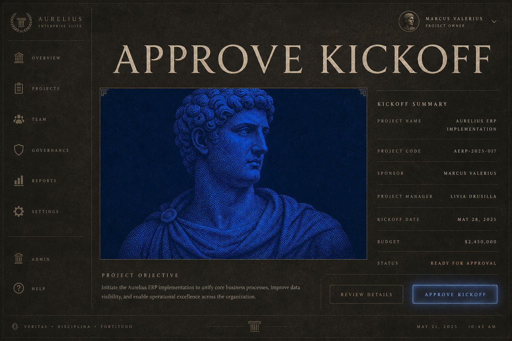
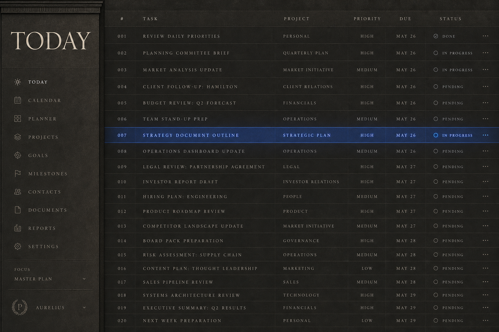
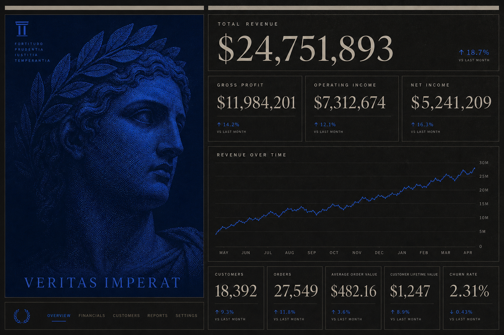
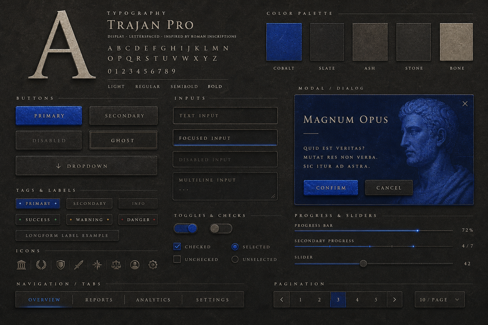
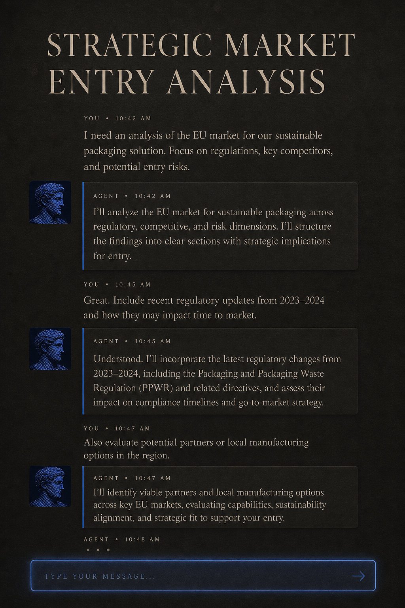
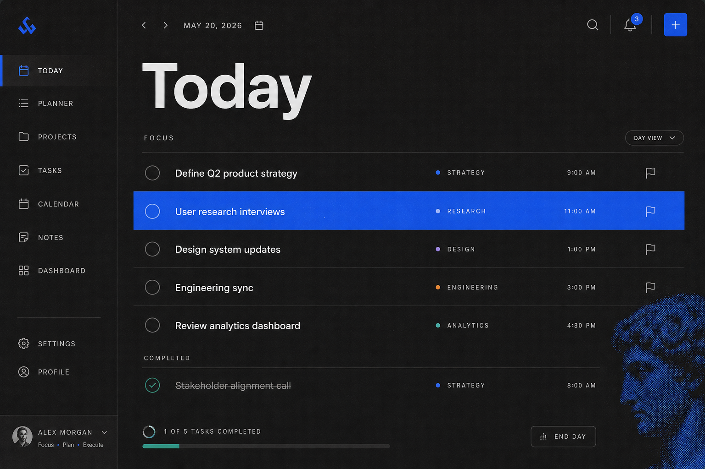
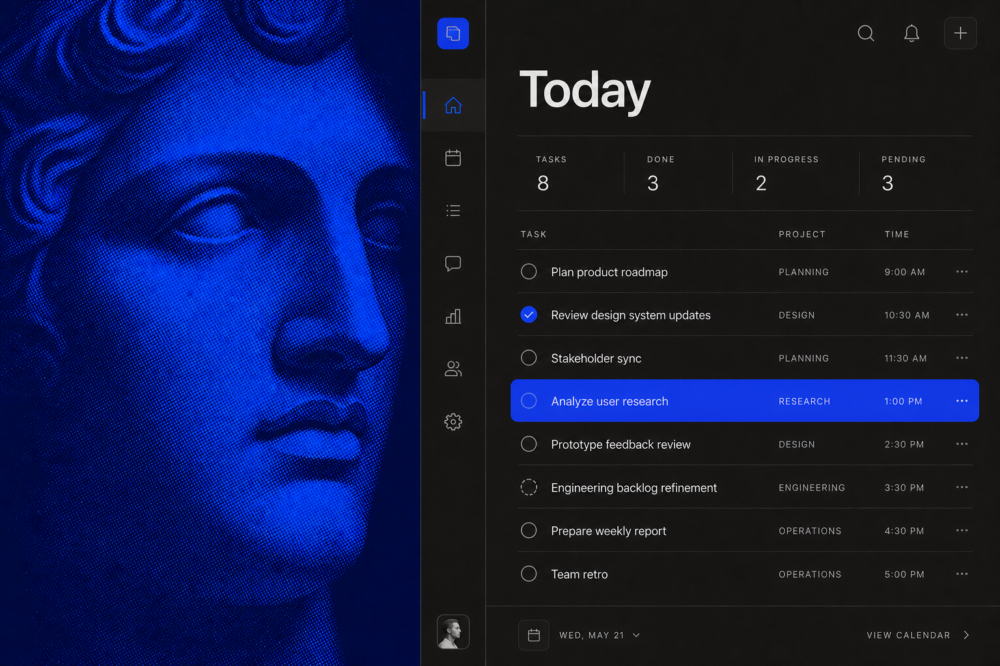
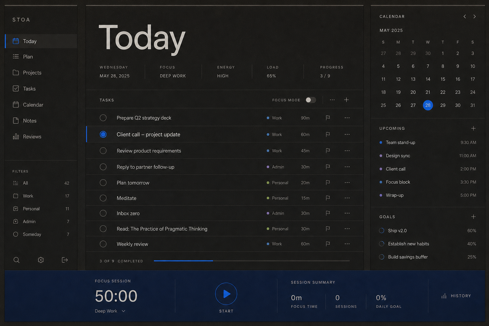
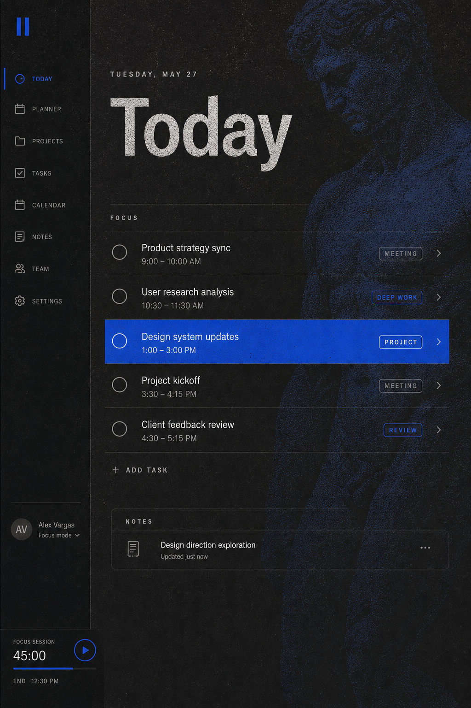
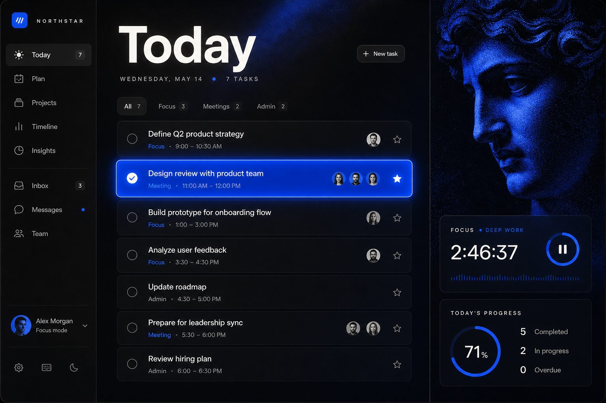

Opposing forces held in strict composition — massive against fine, rough against precise,
warm stone against cold light — where everything present is necessary.
Ground: warm charcoal at surface levels, never black. Voice: cobalt as the event,
slate blue as the light that cuts. Grain as the human hand. Scale contrast as power.
These plates are generated impressions, not mockups — instruments for agreeing on the vibe.
I
Ceremonial — the approval

The monumental register: an inscription-scale headline, one halftone bust on deep cobalt,
inscriptional caps for metadata, a single lit action. Scale contrast doing the power.
II
Dense — the working list

Density without mush: strict row rhythm, carved hairlines, tracked caps —
and one row lit in slate blue as the only color. Trevi logic: full, but nothing arbitrary.
III
Tension — the dashboard

Unequal masses in balance: one dominant cobalt figure opposed by an ordered grid of
numbers. Enormous serif figures against tiny labels; blue as a streak of light through the chart.
IV
Material — the components

The system as material: slab buttons, carved inputs, extremes of weight with no middle,
the cobalt modal as the foreign object. Where the vibe either survives contact with controls or dies.
V
Voice — the conversation

The worker as figure: halftone bust avatar, agent turns as lit-edged panels on stone,
human turns bare on the ground. The input bar as a line of light.
SERIES TWO
Allusion, not costume
Same base, different balances of the tension. The classical enters only by allusion —
a stippled fragment, tracked caps, symmetry, mass — while type, layout, and finish stay modern.
A
Modernity dominant

A shipping 2026 tool; the ancient present only as a halftone fragment entering from the edge.
The echo, not the subject.
B
Equal tension

Ancient and modern side by side at equal weight — the editorial crop makes the bust modern,
the interface stays strict and plain.
C
Structural allusion

No imagery at all: antiquity carried purely by symmetry, column rhythm, slab weight,
and scale contrast. The deep cobalt band as the anchoring mass.
D
Human grain

The imperfect layer pushed hard: printed, eroded texture; a ghosted figure in the stone
behind a crisp working list.
E
Alive — light and contrast

Chiaroscuro pushed: elements at different intensities, the active row burning,
the figure lit like sculpture at night. Energy without ornament.